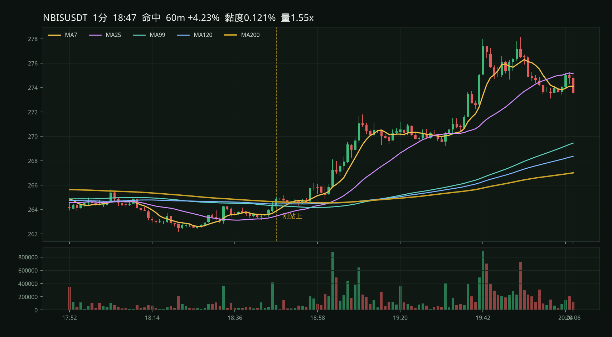
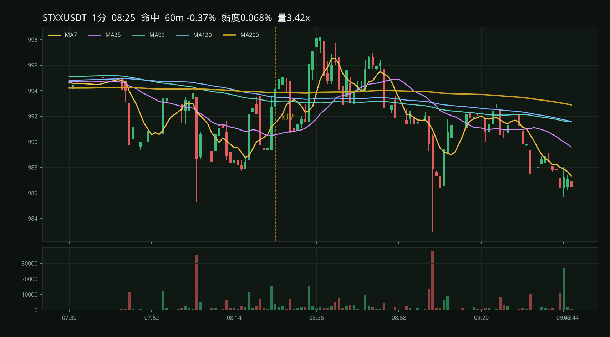
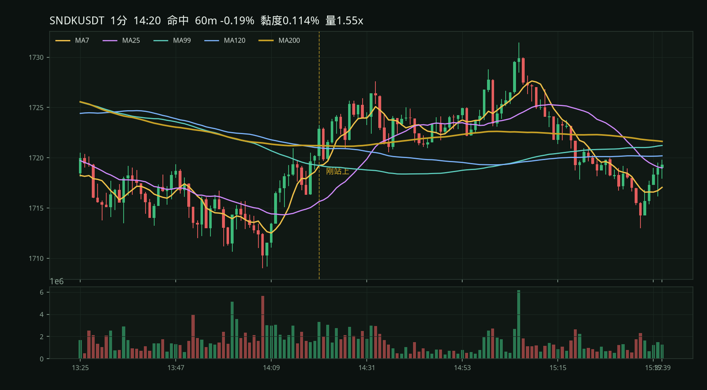
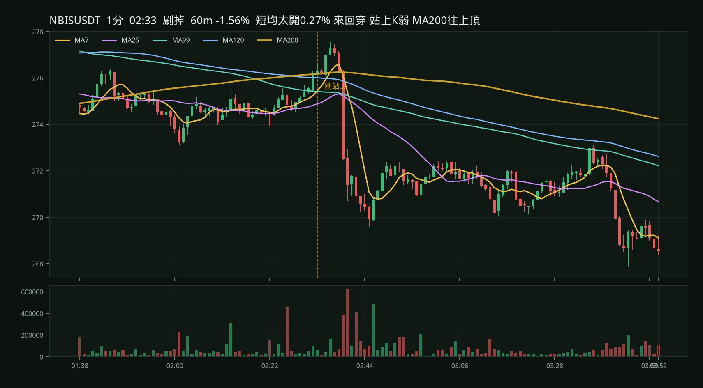
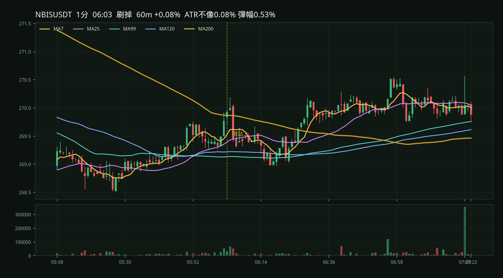
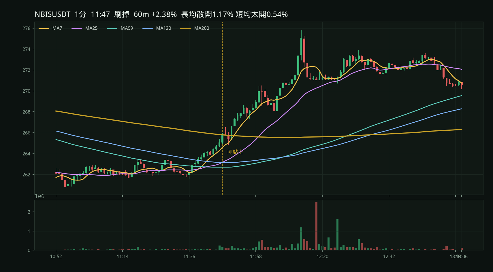
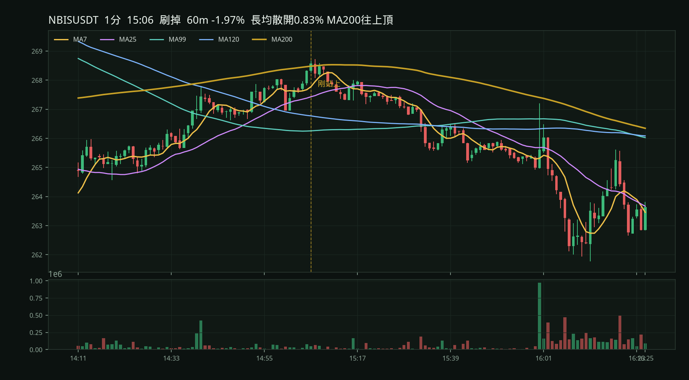
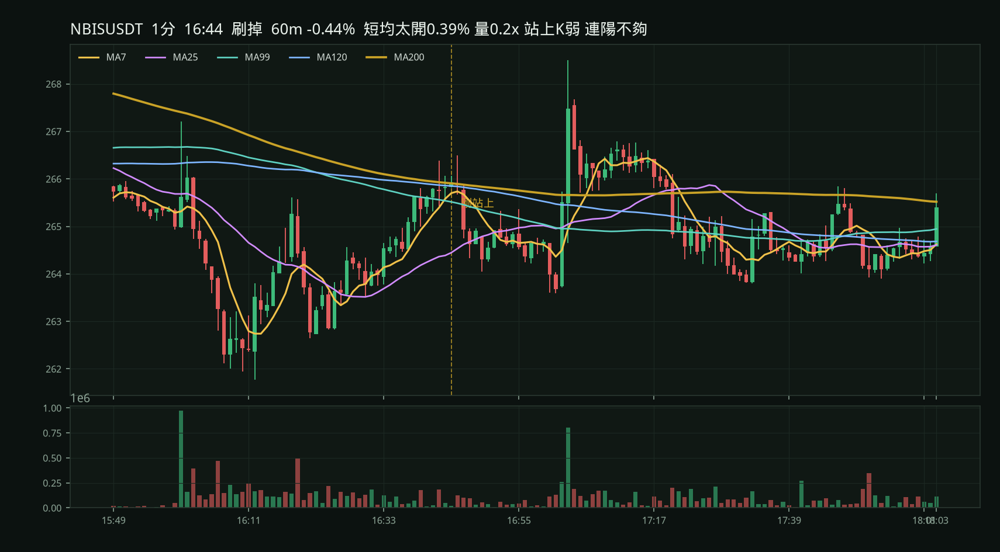

你截圖那根 NBIS 18:47，長均黏度只有 0.12%。 原始 U 底允許黏到 1.2%、回彈 1.2–8%，而且「看起來站在均線上」就算，不一定是剛穿越那一根。 226 個流動 U 本位永續掃整天，當然會爆。
| 條件 | 5m | 1m |
|---|---|---|
| 原始 U 底（黏度 ≤ 1.2%，彈 1.2–8%，站上就算） | 239 | 650 |
| 再加上 MA7 > MA14 > MA25 | 178 | 485 |
| 改成剛收盤穿越 MA200，長均還算黏 | 8 | 45 |
| 截圖那種：長均黏成一條，再從下面拱上去 | — | 3 |
1m 原始 650 筆裡，有 542 筆根本不是剛穿越 MA200。冷卻 30 根也壓不住，因為整天都有幣「彈上來之後還站著」。 原始網把均線散開的 V 也算進去；你要的是黏帶，不是 V。
條件：MA99 / 120 / 200 黏在一起，短均多頭還在 MA200 下，剛收盤站上。圖是靜態圖，不用等套件。

長均黏度 0.12%。這張就是你要的那種：均線黏成一條，從下面拱上去後直拉。

長均更黏（0.07%），K 的質感接近，但後面沒走出去。

同樣是股票合約、細 K、黏均線。站上後幾乎橫著。




